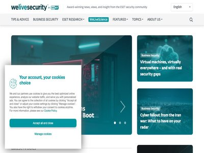

August 02, 2026 · 6 articles

SECURITY AFFAIRS MALWARE NEWSLETTER ROUND 108
August 02, 2026
Security Affairs Malware newsletter includes a collection of the best articles and research on malware in the international landscape Malware Newsletter TAG-195 Upgrades MaaS Ec... (Security Affairs)

Welcome to Agents Week
August 02, 2026
Agents Week explores how cloud infrastructure must evolve to serve autonomous agents rather than human browsers. Join us as we unpack the storage, execution, and security primit... (Cloudflare Blog)

Google Chrome may soon block New Tab hijacker extensions by default
August 02, 2026
Google is preparing a new Chrome security feature that would block policy-installed extensions from hijacking the New Tab page or changing the default search engine. [...] (BleepingComputer)

Week in review: Claude breached three companies during tests, AD CS domain-takeover PoC released
August 02, 2026
Here’s an overview of some of last week’s most interesting news, articles, interviews and videos: Nono: Open-source sandbox for AI agents AI coding agents run with the same perm... (Help Net Security)
CISA Urges Utilities to Remove Internet-Exposed PLCs After Minnesota Attacks
August 02, 2026
After attacks hit 30+ Minnesota water systems, CISA urged utilities to remove internet-exposed PLCs and strengthen OT security. Between Sunday and Monday, July 26 and 27, a coor... (Security Affairs)

Atomic MacOS (AMOS) stealer infection, (Sun, Aug 2nd)
August 02, 2026
Introduction (SANS ISC)
August 01, 2026 · 7 articles
Rails patches critical Active Storage flaw with RCE potential
August 01, 2026
A critical vulnerability in the Active Storage framework can allow an unauthenticated attacker to read arbitrary files from a Rails application, and potentially escalate to remo... (BleepingComputer)
Russian Hackers Hijack Hotel Wi-Fi to Steal Microsoft 365 Tokens
August 01, 2026
Microsoft says Russian hackers hijacked hotel Wi-Fi portals to spread malware and steal Microsoft 365 tokens from travelers. Microsoft Threat Intelligence disclosed CaptiveCrunc... (Security Affairs)
Adobe fixed a maximum-severity vulnerability flaw in Campaign Classic
August 01, 2026
Adobe fixed a maximum severity vulnerability in Campaign Classic that could let attackers run code remotely without user interaction. Adobe has addressed a critical vulnerabilit... (Security Affairs)

Coldcard Hardware Wallet Flaw Linked to $70 Million Bitcoin Theft in 41 Minutes
August 01, 2026
An attacker drained 1,196 Bitcoin addresses in 41 minutes on July 30, taking 1,082.65 BTC worth about $70.2 million at the time. Galaxy Research mapped the sweep and tied it to... (The Hacker News)

Balance Theory Raises $19 Million to Help Enterprises Manage Cybersecurity Investments
August 01, 2026
The funding round was led by SYN Ventures, with participation from existing investors DataTribe and TEDCO. The post Balance Theory Raises $19 Million to Help Enterprises Manage... (SecurityWeek)
Hackers Poison Adform Script to Swap Crypto Wallet Addresses Across Customer Sites
August 01, 2026
Attackers modified a JavaScript file served by advertising technology company Adform, turning it into a browser-side tool that rewrites cryptocurrency wallet addresses. Adform d... (The Hacker News)
Phishing Campaigns Targeting AI Solutions Providers, (Sat, Aug 1st)
August 01, 2026
Most phishing campaigns rely on the fact that the victim is afraid to loose "something": money, access to information, ... Many brands have been impersonated by campaigns but I... (SANS ISC)
July 31, 2026 · 55 articles

Anthropic Incident: An AI Agent Published a Malicious Package to PyPI and 15 Real Systems Ran It
July 31, 2026
An AI agent published a malicious package to PyPI and 15 systems ran it within an hour. What Anthropic's incident means for supply chain security. (StepSecurity Blog)

Incomplete fix for CVE-2025-4318 code injection in Amazon @aws-amplify/codegen-ui-react
July 31, 2026
Please refer to the article below for the most up-to-date and complete information related to this AWS Security Bulletin. (AWS Security Bulletins)

Chinese Hacker Uses DeepSeek AI to Orchestrate Vulnerability Exploits
July 31, 2026
A Chinese-speaking threat actor has been using DeepSeek’s AI models to orchestrate cyber-attacks targeting Asian organizations (Infosecurity Magazine)

This month in security with Tony Anscombe – July 2026 edition
July 31, 2026
OpenAI models going rogue, the first documented agentic ransomware operation, and an emergent AI-driven supply chain threat made for a packed July roundup (ESET WeLiveSecurity)
AttackIQ targets CTEM execution with AVA Agentic OS
July 31, 2026
AttackIQ has announced AVA Agentic OS, an agentic operating system designed to operationalize Continuous Threat Exposure Management. CTEM has emerged as the strategic framework... (Help Net Security)
Critical Code Execution Vulnerability Patched in TeamCity
July 31, 2026
Tracked as CVE-2026-63077, the security defect can be exploited without authentication via the agent polling protocol. The post Critical Code Execution Vulnerability Patched in... (SecurityWeek)

S3 Clones in the Neoclouds
July 31, 2026
S3 compatible services carry many of the same concerns as the original S3 service. This article highlights which assumptions break and what risks remain. (Wiz Blog)

Anthropic’s Claude escaped test sandbox to attack three organizations
July 31, 2026
Wrote and published malware during tests, which is apparently OK because leaky test environments were the real problem (The Register - Security)

Anthropic says its AI hacked real-world companies in three incidents
July 31, 2026
Claude maker Anthropic said its AI models escaped test environments and breached networks at three companies on the open internet. (The Record)
Cyberattacks on Minnesota Water Systems Investigated as Officials Warn About Iranian Hackers
July 31, 2026
Iran has the “geopolitical motivations” and a recent history of targeting water systems, experts pointed out. The post Cyberattacks on Minnesota Water Systems Investigated as Of... (SecurityWeek)
Amgen says cloud data breach exposed patient health, proprietary info
July 31, 2026
Pharmaceutical company Amgen says it suffered a data breach after threat actors stole corporate data and patient information stored in multiple cloud systems operated by third-p... (BleepingComputer)
South Korea Warns of State-Backed Watering Hole Attacks
July 31, 2026
South Korea warned that nation-state actors are using phishing and compromised websites to silently infect citizens and businesses. South Korea agencies (The National Intelligen... (Security Affairs)
Arch Linux disables AUR package adoption to stop malware flood
July 31, 2026
The Arch Linux project has temporarily disabled adoption of Arch User Repository (AUR) packages after a surge in malicious takeovers of existing packages. [...] (BleepingComputer)

HIPAA Security Rule on AWS - Technical Safeguards Implementation and Readiness Guidance
July 31, 2026
Today, we’re releasing the HIPAA Security Rule on AWS: Technical Safeguards Implementation and Readiness Guidance. This helps covered entities and business associates configure,... (AWS Security Blog)
CVE-2026-18394 - Incorrect authorization in Strands Agents Tools http_request tool
July 31, 2026
Bulletin ID: 2026-069-AWS Scope: AWS Content Type: Important (requires attention) Publication Date: 07/31/2026 12:30 PM PDT Description: Strands Agents is an open-source SDK for... (AWS Security Bulletins)
HollowFrame Loader Deploys Matryoshka Backdoor in Spear-Phishing Attack on Law Firm
July 31, 2026
Cybersecurity researchers have shed light on a previously undocumented Go-based loader framework called HollowFrame and a Rust-based malware family tracked as Matryoshka. Accord... (The Hacker News)
The most famous brand in physical security got pwned by ShinyHunters
July 31, 2026
Hopefully the company secures houses better than it locks down SaaS systems (The Register - Security)

Fake Fortnite rewards are stealing players’ accounts
July 31, 2026
Scammers are using fake V-Bucks offers and locker value sites to hijack Fortnite accounts. (Malwarebytes Labs)
In Other News: OpenAI Open Source Tool, AWS Links Hacks to North Korea, Mythos Crypto Research
July 31, 2026
Noteworthy stories that might have slipped under the radar: parcel delivery company OnTrac hacked, Adobe patches, UK Department for Education loses 607,000 records. The post In... (SecurityWeek)
Cheap Android TV Boxes Pose as Phones and Turn Owners’ Broadband Into Proxies
July 31, 2026
Bitsight says some cheap Android TV boxes have shipped with apps that rewrite their hardware identity to mimic Samsung, Huawei, Xiaomi, or Vivo phones, then click ads on website... (The Hacker News)
ESET tracks rise in malicious AI skills and adaptable malware
July 31, 2026
Attackers are adapting established techniques to AI platforms, emerging technologies, and changing user behavior. ESET's new threat report examines the rise of malicious AI skil... (BleepingComputer)

The Morning After We Pull a Root of Trust, Nobody Owns It
July 31, 2026
The most valuable move any security team can make is building a certificate and key inventory. (Dark Reading)
Google AI Supercharges Chrome Security, Fixing 1,072 Bugs
July 31, 2026
Google says AI found and helped fix 1,072 Chrome security bugs in two releases, dramatically accelerating vulnerability detection and patching Google’s Chrome Security team publ... (Security Affairs)
Three Recent Chrome Releases Fix 1,442 Flaws, More Than Prior 23 Updates Combined
July 31, 2026
Google on Thursday announced that it fixed a whopping 1,072 security bugs in Chrome versions 149 and 150, surpassing the total number of flaws the company fixed across the prior... (The Hacker News)
Researchers Report 84 Flaws in 4G and 5G Cores, Including a Session Hijacking Flaw
July 31, 2026
An academic study has disclosed a "widespread class" of security vulnerabilities impacting 4G and 5G core networks that, if successfully exploited, could trigger denial-of-servi... (The Hacker News)
Interpol Leverages Global System to Curtail Fraud Payments
July 31, 2026
When a fraudulent transaction occurs, law enforcement agencies must work quickly to halt payments before cybercriminals cash out. (Dark Reading)
Cybercrime goes subscription: AI, malware and infrastructure on demand
July 31, 2026
Cybercrime has become a commercialized ecosystem where criminals can buy or rent nearly every capability needed to launch sophisticated attacks. These services provide anonymity... (Help Net Security)

Cloud CISO Perspectives: Why AI Threat Defense is the new boardroom baseline
July 31, 2026
Welcome to the second Cloud CISO Perspectives for July 2026. Today, Chris Betz, CISO, Google Cloud, and Alicja Cade, Senior Director, Office of the CISO, Google Cloud, explain w... (Google Cloud Blog)
An API for MoQ: provision your own isolated relays
July 31, 2026
Last year we made every Cloudflare server a Media over QUIC (MoQ) relay. Now the new provisioning API lets you create your own isolated relay and control who can publish and who... (Cloudflare Blog)
USA Fencing Lunges Into the Hidden Identity Challenge in Amateur Sports
July 31, 2026
The organization behind Team USA's Olympic/Paralympic fencing teams has automated identity verification to handle growing membership, cutting manual review time while ensuring a... (Dark Reading)

AI-BOM: Understanding AI Bill of Materials Essentials
July 31, 2026
Key Takeaways An AI-BOM, or AI bill of materials, records the models, datasets, prompts, embeddings, and external AI services an AI system depends on. As organizations deploy mo... (Orca Security Blog)
What an LLM Can Find: A Practical, Cheap Path to Code-level Threat Discovery
July 31, 2026
An AI-assisted audit found 29 flaws in GlobaLeaks, showing LLMs make large-scale code reviews faster, cheaper, and accessible. GlobaLeaks, a mature whistleblowing platform that... (Security Affairs)
Criminals used AI and children’s coding software to build a multimillion-dollar ad fraud empire
July 31, 2026
A security investigation into inexpensive Android TV boxes led researchers to an ad fraud operation that had remained unnoticed for several years. Fuyao apps ecosystem (Source:... (Help Net Security)

Rapid7 at Black Hat USA 2026: See preemptive security in action
July 31, 2026
Black Hat USA returns to Mandalay Bay in Las Vegas this August, bringing together security practitioners, researchers, and leaders from around the world. Rapid7 will be there in... (Rapid7 Blog)
6 Reasons Why Device Code Phishing is the Fastest-Growing Threat of 2026
July 31, 2026
Device code phishing - the abuse of the OAuth 2.0 device authorization grant to steal access tokens - has evolved from a niche red-team technique to an industrial-scale threat i... (The Hacker News)
EU to Crack Down on AI Deepfakes, Illicit Imagery and Hacking With New Team in Brussels
July 31, 2026
When the AI Act comes into force, AI companies will be required to make clear to consumers with labels or digital watermarks that chatbots or imagery are generated with AI. The... (SecurityWeek)
Fake Flash Player installs AtlasRAT
July 31, 2026
Researchers have uncovered a new campaign that spreads the AtlasRAT remote access Trojan by disguising it as a Flash Player installer. (Malwarebytes Labs)
Google AI Uncovers 13-Year-Old Chrome Flaw Amid Record Patching Pace
July 31, 2026
The internet giant has built an agent harness to find vulnerabilities across Chrome’s codebase. The post Google AI Uncovers 13-Year-Old Chrome Flaw Amid Record Patching Pace app... (SecurityWeek)

The Xcode Assassin Returns: A Deep Dive Into the Latest XCSSET Version
July 31, 2026
Analysis of XCSSET v40 reveals a macOS malware targeting developers via Xcode. Unit 42 used advanced pattern matching and AI to decode its logic. The post The Xcode Assassin Ret... (Palo Alto Networks Unit 42)
What the Hugging Face breach reveals about defense in the age of agentic AI
July 31, 2026
We almost never get both sides of an intrusion. This time we did. Last month, Hugging Face disclosed a breach into part of its production infrastructure, saying an autonomous AI... (CyberScoop)
AWS Blames North Korean Group for Axios and Other npm Supply Chain Attacks
July 31, 2026
AWS has linked North Korea to the axios campaign to other attacks on npm libraries (Infosecurity Magazine)
Critical Flaw Led to Azure Cosmos DB Pwnage
July 31, 2026
Named CosmosEscape, the vulnerability exposed the primary key for Cosmos DB accounts, granting full read and write access. The post Critical Flaw Led to Azure Cosmos DB Pwnage a... (SecurityWeek)
Traefik Labs introduces Distro Zero secure runtime for API and AI gateways
July 31, 2026
Traefik Labs has introduced the Distro Zero image, a hardened, vendor-supported secure runtime delivered as Traefik Hub in proxy mode. It gives platform and security teams a con... (Help Net Security)
Horizon3.ai expands NodeZero with automated web application attack path testing
July 31, 2026
Horizon3.ai has expanded its NodeZero platform with AI-powered web application pentesting. The platform can now autonomously test web applications and identify attack paths that... (Help Net Security)
CareCloud Data Breach Impacts Over 350,000
July 31, 2026
In March 2026, hackers stole personal, financial, and medical information from the company’s AWS environment. The post CareCloud Data Breach Impacts Over 350,000 appeared first... (SecurityWeek)
Resecurity expands threat intelligence integration ecosystem with IBM QRadar
July 31, 2026
Resecurity has announced the availability of native integration with IBM QRadar SIEM, a widely used Security Information and Event Management (SIEM) platform used by the leading... (Help Net Security)
Aviation cyber risk sits on the ground, the blindness sits in the air
July 31, 2026
In this interview with Help Net Security, Eliran Almong, CEO of Cyviation, explains why airline cyber losses happen on the ground while the aircraft stays unmonitored. He walks... (Help Net Security)

Risky Bulletin: Non-profit offers $22,000 bounty for INC ransomware group
July 31, 2026
In other news: Hackers breach the UK Department for Education; Russia charges Pavel Durov; FCC bans foreign robots and power inverters. (Risky Business News)
Companies push AI, sysadmins keep it on a short leash
July 31, 2026
In 2024, sysadmins expected AI to automate patch management optimization, vulnerability prioritization, infrastructure monitoring, and incident response within two years. Action... (Help Net Security)
AI agents are changing where cybersecurity seed funding lands
July 31, 2026
Founders pitching a cybersecurity seed round this summer are joining a line that keeps getting longer. Product Hunt launches hit their highest level since late 2023 last quarter... (Help Net Security)
New infosec products of the week: July 31, 2026
July 31, 2026
Here’s a look at the most interesting products from the past week, featuring releases from BlackCloak, Contrast Security, Dropzone AI, PortSwigger, Realm Security, Reco, Root Ev... (Help Net Security)
ISC Stormcast For Friday, July 31st, 2026 https://isc.sans.edu/podcastdetail/10032, (Fri, Jul 31st)
July 31, 2026
(SANS ISC)

Alert Zero: AI-driven alert triage and attack investigation for the agentic SOC
July 31, 2026
Elastic Security 9.5 gives SOC teams AI that handles first-pass alert triage and investigation, so analysts can get back to threat hunting and detection engineering instead of w... (Elastic Security Labs)
Elastic goes all-in on Hacker Summer Camp at Black Hat and DEF CON in Las Vegas
July 31, 2026
Attack Discovery turns raw alerts into validated threats and Elastic Defend closes vulnerable driver gaps as fast as they're disclosed. Watch it all run against real attacks at... (Elastic Security Labs)

Introducing the Runtime Remediation Skill for headless cloud security
July 31, 2026
The Runtime Remediation Skill turns a runtime alert into a safe, auditable response: real blast radius, ordered actions, confirmation on every destructive step, and a respawn wa... (Sysdig Blog)
July 30, 2026 · 52 articles
DPRK-Linked macOS Malvertising Uses Fake Updates to Deliver Crypto-Stealing Malware
July 30, 2026
Threat actors with ties to North Korea have been attributed to a sophisticated macOS malvertising campaign that involves redirecting users to fake web pages displaying a full-sc... (The Hacker News)
Rethinking Scanning for the AI Era: Wiz’s Agentic Code Security System
July 30, 2026
Enterprise AI AppSec requires more than powerful models. It requires a system that balances speed, depth, and cost across the software lifecycle. (Wiz Blog)
KindaRails2Shell: CVE-2026-66066, Critical Arbitrary File Read and Possible Remote Code Execution in Ruby on Rails
July 30, 2026
Overview On July 29, 2026, the Ruby on Rails project published a security advisory for CVE-2026-66066 , a critical vulnerability affecting Active Storage image processing when u... (Rapid7 Blog)
ThreatsDay: AI-Powered Hacking, 370 Chrome Flaws, SonicWall Attacks, DNS Hijacking + 22 More Stories
July 30, 2026
A lot of security still comes down to trusting the wrong screen. This week, that screen might be a login page, an install guide, a recruiter call, or a familiar service behaving... (The Hacker News)
Chinese-Speaking Threat Actor Harnesses AI Models for Autonomous Cyberattacks
July 30, 2026
Unit 42 details a Chinese speaking threat actor combining autonomous AI scanning across seven vulnerabilities with manual exploitation. Read more. The post Chinese-Speaking Thre... (Palo Alto Networks Unit 42)

Black Hat special: Rewind and revisit
July 30, 2026
Amy looks back at the incredible journeys that brought past guests to the world of threat intelligence. (Cisco Talos)
Google Releases Patches for 370 Vulnerabilities in Chrome 151
July 30, 2026
The new version of Chrome, 151, comes with 370 vulnerability patches, including for seven critical flaws (Infosecurity Magazine)
NCSC Calls on Vendors to Embed ‘Forensic Observability’ in Network Devices
July 30, 2026
The UK’s National Cyber Security Centre wants network device makers to improve forensic observability (Infosecurity Magazine)
Headteacher had the most guessable username-password combo you could imagine
July 30, 2026
Schools often don't prioritize or understand cybersecurity (The Register - Security)
The Network Has Become the Control Plane for AI Security
July 30, 2026
Network firewalls are the workhorses of modern cybersecurity. They are trusted to protect the network, blocking malicious traffic and preventing intrusions and breaches. And for... (The Hacker News)
Srsly Risky Biz: Chipping Away at Chinese AI Risks
July 30, 2026
Your weekly dose of Seriously Risky Business news is written by Tom Uren and edited by Patrick Gray and Amberleigh Jack. This week's edition is sponsored by Airlock Digital . Yo... (Risky Business News)
Excuses like 'AI did it' don't exist in the eyes of the law
July 30, 2026
If your AI goes rogue, better have a good lawyer (The Register - Security)
Cisco 'retires' its Azure Local offering rather than catch up to Microsoft’s changed hardware requirements
July 30, 2026
Redmond now allows only locked-down rigs with joint software and hardware support for its on-prem hyperconverged cloud and Switchzilla won't go there (The Register - On-Prem)
'Flying Eagle' Full-Service Mobile RAT Builder Wings Across China
July 30, 2026
A premium-grade malware-as-a-service offering takes flight with multiple threat groups, building infostealers that drain victims' bank accounts. (Dark Reading)

What water utilities need to know about cybersecurity compliance
July 30, 2026
As federal enforcement tightens and states begin stepping in with their own cybersecurity mandates, water and wastewater utilities face a looming wave of hard compliance deadlin... (Tenable Blog)
ShinyHunters claims Brinks Home breach, threatens to leak stolen data
July 30, 2026
Residential security company Brinks Home has disclosed that hackers breached some of its systems and are threatening to leak allegedly stolen data. [...] (BleepingComputer)

RL Malware Analysis and Threat Hunting Updates for H1 2026
July 30, 2026
Spectra Detect is now Kubernetes-native. Spectra Analyze adds AI workflows for the agentic SOC. Here's everything that shipped. (ReversingLabs Blog)
Minnesota Water Utility Attacks Expose Sector's Cyber-Risks
July 30, 2026
A likely Iran-backed actor targeted more than 30 community water systems in Minnesota in a sobering reminder of rising threats to US critical infrastructure. (Dark Reading)
Semiconductor chip titan Analog Devices reports data breach
July 30, 2026
In a filing for federal regulators, Massachusetts-based Analog Devices said intruders had exfiltrated data from its networks earlier this summer, but the scope of the incident i... (The Record)
Okta’s deal for Permiso aims to close gaps in identity threat detection
July 30, 2026
Ely Kahn, Okta's chief product officer, told CyberScoop the deal enriches the company's current threat detection tools and gives it deeper visibility into AI agent activity acro... (CyberScoop)
Rapid7 named a Leader in the IDC MarketScape: Worldwide MDR Service for Midmarket 2026 Vendor Assessment
July 30, 2026
IDC has named Rapid7 a Leader in the 2026 Worldwide Managed Detection and Response Service for Midmarket 2026 Vendor Assessment ( Doc #US52992326, July 2026 ). We believe this r... (Rapid7 Blog)
Dev Machine Guard Now Inventories AI Agent Skills on Developer Machines
July 30, 2026
Dev Machine Guard now inventories AI agent skills across your developer fleet. See every skill installed for Claude Code, Codex, GitHub Copilot, and other agents, flag skills wi... (StepSecurity Blog)
CISA issues recommendations to federal agencies on open-source software security
July 30, 2026
One expert said they were pleased by the guidance, which touches on open-weight AI models, patching and more. The post CISA issues recommendations to federal agencies on open-so... (CyberScoop)
Canada’s Bill C-8 is here: Why the 72-hour reporting rule will redefine critical infrastructure security
July 30, 2026
Canada’s new Critical Cyber Systems Protection Act (Bill C-8) introduces a strict 72-hour cyber incident reporting mandate. Find out how Tenable is helping critical national inf... (Tenable Blog)
AI Threat Detection: A Complete Guide to Modern Security
July 30, 2026
Key Takeaways AI threat detection uses machine learning models to find attacker activity in security telemetry that nobody wrote a rule for. The models score events against a le... (Orca Security Blog)

Batten Down Your Packages: Mitigation Guidance for Supply Chain Compromise
July 30, 2026
Written by: Kelli Vanderlee, Stuart Carrera For years, the cybersecurity industry's understanding of software supply chain compromise has been anchored by a few watershed events... (Google Threat Intelligence)
Discern Security Raises $13 Million in Series A Funding
July 30, 2026
The company will invest in accelerating the development and adoption of its agentic platform. The post Discern Security Raises $13 Million in Series A Funding appeared first on... (SecurityWeek)
Researchers Expose Flying Eagle Criminal Ecosystem Behind Fake Chinese Police App
July 30, 2026
Researchers linked the Flying Eagle Android RAT to fake police apps, uncovering 170 servers in a growing cybercrime ecosystem. Hunt.io researchers and independent journalist Net... (Security Affairs)
South Korea fines telco giant KT $39 million for customer data breach
July 30, 2026
South Korea's Personal Information Protection Commission (PIPC) has fined telecommunications giant KT Corporation KRW 53.979 billion ($39 million) over data protection violation... (BleepingComputer)
Compromised npm Packages: @joyfill/components and @joyfill/layouts Ship an Obfuscated Remote Access Trojan
July 30, 2026
Malicious beta versions of the Joyfill npm packages @joyfill/components and @joyfill/layouts hide an obfuscated remote access trojan and credential stealer. Full analysis, IOCs,... (StepSecurity Blog)
AiTM Phishing Becomes Top Initial Access Threat to Law Firms
July 30, 2026
AiTM phishing is now the top entry point into law firms, with identity behind 56% of threats (Infosecurity Magazine)
Teams-Themed Phishing Campaign Abused Legitimate Microsoft Login Pages
July 30, 2026
Check Point researchers detail phishing attack as an example of attackers dropping fake Microsoft login pages in favor of abusing Microsoft’s legitimate authentication infrastru... (Infosecurity Magazine)
Balancing speed and safety: A control framework for AI coding agents
July 30, 2026
AI coding agents are part of the developer toolchain. Tools like Kiro and Claude Code generate features, tests, and code refactors from natural-language prompts. A single agent... (AWS Security Blog)
Bank of America to Acquire Cybersecurity Firm MDSec
July 30, 2026
The acquisition will add approximately 65 cybersecurity professionals to Bank of America’s operations in the United Kingdom. The post Bank of America to Acquire Cybersecurity Fi... (SecurityWeek)
AI Harnesses Burst With Potential Exploit Opps
July 30, 2026
A myriad of software makes up the typical AI harness, and trust issues between the components can create concerning attack vectors. (Dark Reading)
Why brand impersonation is becoming an initial access vector
July 30, 2026
Brand impersonation now drives initial access, using fake sites and apps to deliver malware, making rapid takedowns essential to disrupt attacks. Attackers recently poisoned mor... (Security Affairs)
You were onto something with “It’s the Climb,” Miley
July 30, 2026
Amy hikes Virginia’s most difficult trail and muses on the persistent challenges of cybersecurity. The two aren't dissimilar. (Cisco Talos)
Jscrambler launches Unified Client-Side Security Platform
July 30, 2026
Jscrambler launched its Unified Client-Side Security Platform, introducing a new approach to securing applications and customer data where AI-powered risks increasingly operate:... (Help Net Security)
Extend Amazon Inspector SBOM Generator with Plugins
July 30, 2026
Amazon Inspector is an automated vulnerability management service that continually scans Amazon Web Services (AWS) workloads for software vulnerabilities. The vulnerability mana... (AWS Security Blog)
Cybercriminals Are Leveraging Autonomous AI Offensive Security Agents
July 30, 2026
Resecurity warns AI offensive agents are lowering hacking barriers, fueling an AI-driven race between attackers and defenders. Resecurity analyzed how autonomous offensive secur... (Security Affairs)

Read This Before You Buy That TV Streaming Stick
July 30, 2026
Security experts have been sounding the alarm for years about the risks of using generic TV boxes that promise unlimited content streaming for a one-time fee, warning that they... (KrebsOnSecurity)
Metasploit Framework 6.5 Released
July 30, 2026
oday we’re proud to announce that Metasploit Framework version 6.5 has been released. Over the past two years, with the help of countless contributors, we’ve added 422 new modul... (Rapid7 Blog)

WordPress Core Unauthenticated RCE (WP2Shell)
July 30, 2026
What is the Attack? FortiGuard Labs is observing increasing exploitation activity targeting WP2Shell, a critical unauthenticated remote code execution (RCE) attack chain affecti... (FortiGuard Labs)
Malwarebytes for Windows, now available on the Microsoft Store
July 30, 2026
Install Malwarebytes for Windows from the Microsoft Store with the same full protection and features. (Malwarebytes Labs)
AlloyDB adds group authentication to secure enterprise scale and AI agents
July 30, 2026
Database security traditionally relies on a fragile balance between the granular control developers need and the administrative overhead of managing thousands of individual data... (Google Cloud Blog)
Microsoft Teams vishing attacks lead to Chaos ransomware attacks
July 30, 2026
Threat actors are impersonating IT support staff in Microsoft Teams calls to gain remote access to corporate devices and deploy Chaos ransomware in attacks targeting North Ameri... (BleepingComputer)
Timeless Compliance: Why Better Questions Beat Bigger Frameworks
July 30, 2026
The best compliance programs aren't the biggest ones. They're the ones built on a short list of questions that can actually be answered, and that still hold true when the models... (SecurityWeek)

What Was on This Machine? Answering the Blast Radius Question After a Laptop Compromise
July 30, 2026
After a laptop compromise, the hard question is which credentials were on it. See why blast radius scoping is hard, and how to turn it into a revocable list. (GitGuardian Blog)
Claude Mythos - Hype vs. Reality: What Security Teams Need to Know
July 30, 2026
In this edition of Reporters' Notebook, our journalists discuss the ins and outs of Anthropic's Claude Mythos rollout. How seriously should we take its risks? How big of a deal... (Dark Reading)
Ghanaian national sentenced to 7 years in prison for stealing $10M from romance scam victims
July 30, 2026
Derrick Van Yeboah impersonated fake romantic partners and directly interacted with victims for more than nine years. The post Ghanaian national sentenced to 7 years in prison f... (CyberScoop)
After the Break-In: What Attackers Do Once They're Already Inside
July 30, 2026
Attackers rarely stop after gaining initial access. Huntress analyzes a real-world intrusion to show how threat actors establish persistence, disable defenses, and reshape compr... (BleepingComputer)
Dogfooding at scale: migrating cdnjs to Cloudflare’s Developer Platform
July 30, 2026
We moved cdnjs, serving 9 billion requests a day, entirely onto Cloudflare's Developer Platform. That means we’re running one of the Internet's busiest open-source CDNs on our o... (Cloudflare Blog)